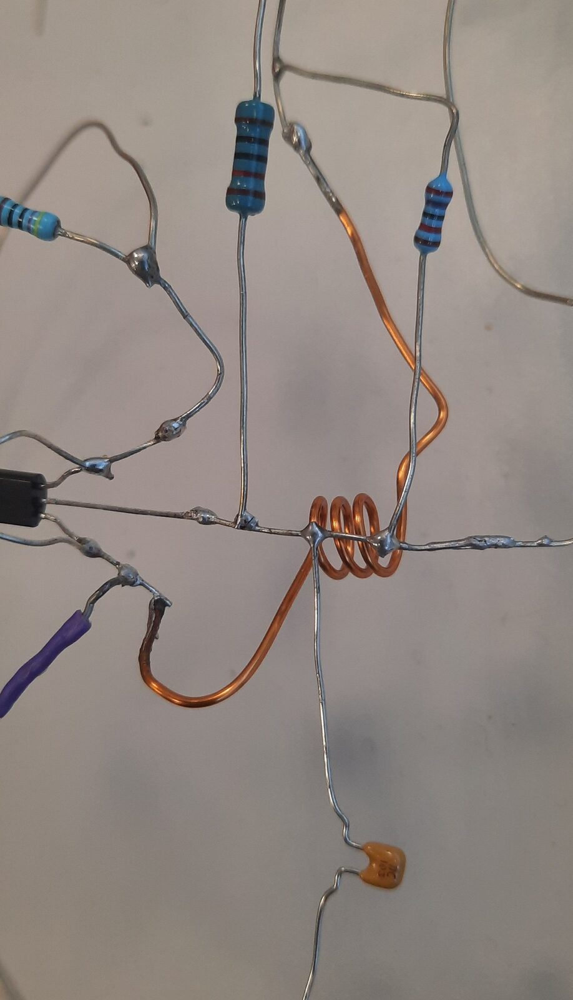
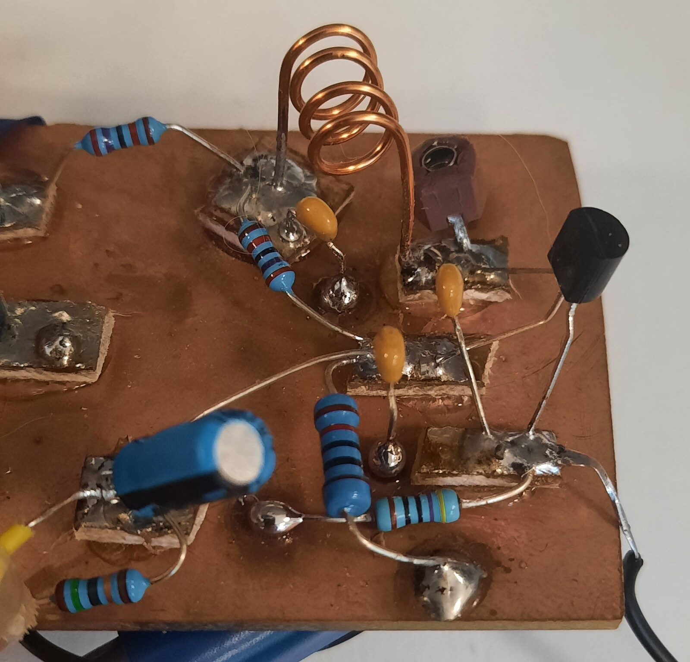

Technology is Land: Strategies towards decolonisation of technology in artmaking
Abstract
This article provides a lens for viewing technology as land, transformed through resource extraction, manufacturing, distribution, disassembly and waste. This lens is applied to processes of artistic creation with technology, exploring ways of fostering personal and informed relationships with that technology. The goal of these explorations will be to inspire a greater awareness of the colonial and capitalist processes that shape the technology we use and the land and people it is in relationship with. Beyond simply identifying the influence of these colonial and capitalist processes, the article will also provide creative responses (alterations to a creative process with technology) which seek to address these colonial processes in a sensitive and critical way. This will be done not to answer the broad question of ‘how do we decolonise art making with technology?’, but to break that question apart into prompts or potential pathways for decolonising.
Author Keywords
Technology, e-waste, colonisation, creative practice
CCS Concepts
•Applied computing → Arts and humanities; Performing arts; •Information systems → Music retrieval;
Introduction
In this article, a lens for viewing technology as land is presented, both in a theoretical domain and in a creative practice domain. The article is divided into two sections. The first section (Technology is land: Explanation of a theoretical lens) provides theoretical information which outlines fundamental knowledge to contextualise and outline the lens. In the second section (Ground Hum: Work description), this theoretical information is applied in a creative practice setting to outline potential practical strategies of implementing the lens.
Technology is land: Explanation of a theoretical lens
Technology has more than a relationship to land, it is land. Our ‘new’ things come from copper ores in Chile [1], tin, iron and lithium from Bolivia [2], and cobalt from the Congo [3] among many others. They have ancient histories and come with many fingerprints already on them. By using and interacting with these technological objects, a person makes themselves part of the objects’ stories. People put themselves either knowingly or unknowingly in relation with this land and others who have left their fingerprints. Further, what they do with that object can influence its future. In this section, contextual details about the complex relationships that exist between humans, technology and land will be shared. These contextual details will provide the basis for a theoretical lens, viewing technology as land. The theoretical lens will then be placed in the domain of artistic practice in the section after this, which will describe approaches to a creative work, Ground Hum, that were formed directly from this lens.
To have an informed understanding of the complex relationships that exist between humans, technology, and land, it is important to take a broad look at the life path a single piece of technology may take from inception to dissolution. We can look at the lifecycles of electronics through the lens of different stages, starting with the mining of land. For any typical piece of consumer electronics, the actual locations where this mining take place are often based almost exclusively on economic considerations which can benefit certain societies above others [4]. The economic incentive of low-cost raw materials creates complex geographic origins for technology. Today, one technological object will likely contain metals and other materials which originate from many different places across the globe [5]. Further, because there is no economic incentive to document these origins, it can be virtually impossible to trace the specific origins of each part of one device. As the land gets passed from hand to hand on its path towards becoming technology, each fingerprint leaves its mark, and its sense of origin begins to be erased. Focusing specifically on creative and musical technology, Elliot Bates and Kyle Devine have both investigated how these origins might be traced within a more limited scope, which is incredibly revealing [5], [6]. There have also been numerous articles which trace the origins of hugely popular devices such as the iPhone [7], [8]. Even with limited investigations such as these it is easy to see how just one device descends from land sourced from an incredible global spread.
The individual mining sites which contribute to the genealogical makeup of our technology are further complicated by the stages that come after extraction. Metal ores are sold off to be rarefied, rendered, and purified into forms that manufacturers can work with. This manufacturing stage can be pollutant, which is true of nearly every stage. Chemical by-products can be released back into the land, air and water creating even more intense and complex relationships between places, humans, and technology [9]–[11]. The manufacturing stage (as well as every other stage in the lifecycles of electronics) requires a great deal of electricity and fuel. Energy harvesting, particularly of fossil fuels, famously involves its own extractive and polluting processes which compound the ones already present in the lifecycle.
A distribution stage connects what becomes manufactured to consumers. Distribution to stores from factories requires, at times, enormous journeys that can span the globe. In many ways the distribution stage is almost never-ending, as raw and rendered materials and eventually waste shuffle from place to place throughout the lifecycles of electronics. These epic journeys which displace and shape the land that becomes our technological objects reflect just how false the idea of ‘newness’ is that goes into advertising these objects to consumers. This is particularly so when one considers how ancient raw materials are before they are extracted. What’s more is that when a technological object is considered old, useless, or obsolete, and is discarded, its journey is far from over. The process of recycling e-waste (or electronic waste) is complex, difficult, and largely non-existent world-wide. In 2019, 82.6% of e-waste globally met an uncertain fate, with only the remainder being formally documented as collected and recycled according to the UN’s Global E-waste Monitor [12]. Until the UN’s 1992 Basel Convention, there was no international regulation on importing and exporting e-waste [13]. Many ‘developed’ countries exported most of their e-waste to countries which would process it informally for little cost. This post-consumer disassembly stage is one of the most fraught stages of the lifecycle. These informal disassembly and waste processing stages have deadly effects on local communities, as well as the land, air and water. E-waste is the fastest growing stream of toxic waste on the planet. Massive burnings at sites like those in Agbogbloshie, in Acra, Ghana release toxic chemicals like lead, arsenic, mercury, brominated flame retardants, chlorofluorocarbons, and hydrochlorofluorocarbons [12]. In many cases though e-waste doesn’t get disassembled or is only partially disassembled before it ends up in landfills. This final stage is the waste stage, which creates an uneasy feedback loop with the land. In the feedback loop, land is extracted to form these technological objects only to be deposited back into the land. The economically driven transformations that this land undergoes throughout its life mean that both the extraction and the discarding of technology leads to harm of that land and in turn the water, air and living things that are in relation to it.
Through the above snapshot of the lifecycles of electronics, it is apparent how technology is inextricably tied to land, and in fact is land itself. The harmful and unsustainable relationships between technology, land and humans are not that old however, and they do not have to last (and one way or another they won’t). Two of the primary drivers for this mode of relating to technology are capitalism and colonialism, which in turn breed an industrialist disregard for human and non-human life. Colonial and capitalist world views determine value in a very specific way which is evidenced in the waste they produce. As Joshua Reno has pointed out,
“Waste takes on a different meaning because a social formation that distinguishes between (economic) value and (symbolic) values has become pervasive with the global spread of capitalist modernity… It is for this reason that Europeans today have separated cemeteries from landfills. The former are places where we prove the transcendent value of ourselves and the people we love; the latter are places where we unceremoniously dump things of little use and even less meaning for us.” [11]
By viewing places and material things in relation to an assigned monetary value (or lack of) as in the processes of copper mining, or e-waste burning, the ability to see other forms of value outside of this worldview is obscured. A capital-centric worldview focuses on the ownership of land and the things we make with that land. The idea of land ownership contrasts with the idea of land guardianship. It attempts to assert the idea that land is an economic resource, rejecting the much older idea that land is a spiritual, cultural, and ceremonial thing that humans foster kinship with.
We are now at the centre of the current landscape, and this is a time where we as individuals can be empowered to make choices about our relationships with land and the elements within, in a way that both honours land with ourselves as descendants and caretakers, and also acknowledges the capitalist history with aims to create a more reflexive future for both us as human beings, and the land that we descend from. One way that these complex issues can be explored and brought into context is by working with the broken apart land that has been termed as waste by an industrialist society, to allow audiences to experience a different way of seeing this waste and different futures for these elements and the land we come from.
Ground Hum: Work description
Placing these ideas into context, the remainder of this article will focus on creative practices used as part of an installation titled Ground Hum. These creative practices were developed directly through the lens of technology as land as outlined in the prior section. Ground Hum is an interactive installation work created by the author which is made up of a collection of interconnected pieces of e-waste, and handmade sculptures made of circuit components. Conceptually, the installation asks visitors to reconsider how physical interactions with technology put them in relation to land. Included in the collection of e-waste are discarded TVs and radios that receive transmissions from the sculptures that also perform as radio and TV transmitters. Scrap circuit boards are also present and electronically connect to the transmitters, creating a surface for visitors to touch, hold and examine, changing the state of the transmissions, and reintroducing the human body into the circuit. The creative processes used to create this piece and its relationship to the lens of ‘technology is land’ can be summarised by looking at four main goals which guided the creation of Ground Hum. These four goals include a hands-on and craft-based approach; reuse of recycled or scrap materials; a visual aesthetic that highlights what is inside of technology over the sleek, concealing visual ‘blackbox’ presentation of typical technological objects and circuits; and audience involvement and interaction in the work and performance. These four goals are interwoven and build off foundational ideas of other artists and individuals in the field, as will be discussed below. They are presented as potential pathways for further exploration and discussion towards a relationship between artmaking and technology that recognises technology as land and the relationships that come with that recognition. They are not to be interpreted as definitive or exhaustive strategies to achieve this goal in any way, but provide a lens that may be strengthened, reused, or simply considered for future artists and makers.
The first goal was to make any physical assembly involved in the piece to involve handmade aspects. The idea of something being ‘handmade’ is often placed in opposition to ‘machine-made’ strategies which rose to prominence through industrialisation. However traditionally, technology was always handmade. Many technologies we use today have precedence in indigenous technologies which often visually bear little resemblance to their mass manufactured contemporary counterparts. For example, Aguilar writes about the Incan Khipu which was effectively a computer made of textiles [15] which involved complex patterns of knots as a visible data storage method. Handmade making of things creates a direct relationship between the maker and the materials that combine to form the thing being made. In the case of electronic technology, those materials are typically natural elements of land which are dramatically shaped by economics and industry, past the point of recognition. Oil becomes plastic, copper ores become colourful wires, rocks with silica become tiny wafers inside of an integrated circuit. This creates an erasure of origin, both in the sense of where technology originates from and who it originates from. Working with technology by hand, even discarded technology, provides a potential way of rejecting that erasure. In Ground Hum, circuits that might have practically been made through PCB design software on a computer, and sent to a manufacturer are instead made by hand. Handmade creative methods distinctly shape the material, including small imperfections which bare marks of its relationship with the maker. This puts it visually in relationship to the body.
The second goal relates to the material side of the work’s relationship with the body. This goal was to use recycled and scrap materials. The thinking behind this goal is related to the concept of land guardianship above land ownership mentioned in the previous section. Through the reuse of scrap parts (scrap copper sheets and electronic components), an attempt was being made at a form of guardianship, care, and consideration for these ‘wasted’ materials. In incorporating these materials into a creative work, the goal was to re-value these materials through re-use. The specific form of value involved in this re-valuing is explicitly a non-economic one, as something meant to be sold as a product would be. Instead, this form of re-valuing is oriented towards accessing a better appreciation for the precious existence of this material, and its intricate relationships. Here, we might go back to Joshua Reno’s idea of a cemetery versus a landfill. In the case of this work, something which has been treated as belonging in a landfill is instead treated as if it belongs in a cemetery, in an attempt to restore a sense of respect and ceremony around its story through the ritual of a creative act.
Supporting the goal of re-using scrap and recycled material is the third goal in the creative process of Ground Hum. The purpose of this third goal is to form a visual aesthetic that highlights what is inside of technology above the sleek, concealing visual ‘blackbox’ presentation of typical technological objects and circuits. ‘Blackboxing’ is a common practice in the design of electronic devices where the components that make the operations of a device possible are hidden from users view in an enclosure (often literally a black box). This folds into the first two goals by showing the recycled materials and components readily, and is in a similar spirit to the first goal in the sense that it is trying to show something that would otherwise be made invisible. In the case of using handmade elements, what is being made visible is the physical labour, whereas in this case what is being shown is the material itself. This is accomplished by using several alternative methods of making and working with circuits. The techniques used in Ground Hum are related to what has been called ‘deadbug’ or point-to-point assembly [16], [17], as well as what has been called ‘Manhattan style’ circuit assembly [18]. Both methods limit or avoid the use of FR-4 printed circuit boards which can contain brominated flame retardants. In the first technique (point-to-point), each component that makes up a circuit is attached directly to the components that it electrically is meant to be connected to (as opposed to fixing it into a circuit board with copper traces on the board routing all the connections between components) (see Fig 1). In the second technique (Manhattan style) components are attached either to a copper plate which acts as a ground plane, or smaller copper tabs which are glued in an isolated way to the larger ground plate to make all the non-ground connections (see Fig 2).


Fig. 1 Example of ‘deadbug’ circuit


Fig. 2 example of ‘Manhattan’ style circuit
The final goal was to have audience involvement and interaction in the work by including elements of the installation where audience could physically touch and interact with the work, changing the state of the installation. Through physical touch of the sculptures and discarded circuitboards, visitors to Ground Hum are able to alter audio-visual transmissions that are sent out of the sculptures to discarded TVs and radios. In many ways this connects back to the hands-on element of the first goal, where the human body is engaging in the technology, altering and becoming an active part of the circuitry. More broadly speaking this also helps create a more ethereal and unique experience with the discarded technology that goes beyond seeing it as waste.
Conclusion
This article discussed a lens for viewing technology as land. The lens involved considering how technology both emerges from land and returns to it via capitalist and colonial processes which ask to be considered and reflected upon during a creative process with technology. To conclude, it is important to think beyond the limited scope of this short article, and consider how it may be possible to expand, adjust or
the lens of ‘technology is land’ in the space of artistic practice. Work from other artists and researchers suggests branches from this lens into related, similar or adjacent spaces. For example, Karaitiana Taiuru’s work outlining the processes of digital colonisation provide another layer of context for how colonial economic worldviews shape technology [13]. Taiuru’s work outlining frameworks for digital sovereignty (specifically through the lens of Te Ao Māori) also present an enormous number of considerations for working with technology generally, in artistic practice and well beyond. Lucie Vágnerová has written about the relationship musical technology has not to land, but labour [8]. Vágnerová’s lens has powerful applications to the lens proposed in this article, specifically as it relates to the colonial (or as Vágnerová puts it, neocolonial) forces at play in the economic interests that drive many of the harmful outcomes of technology manufacturing. Finally, Lisa Kori and David Novak’s chapter in the 2020 edition of Handmade Electronic Music offers a survey of artists working with technology in a handmade way around the world. Many of these artists are working in direct response to colonial economic frameworks which have shaped the technology they work with.
Ethics Statement
This article does not include any direct human participants, so human ethics is not relevant. It does deal with sensitive indigenous issues. This was mitigated through the acknowledgement and inclusion of indigenous authors, including the primary author of the article who is indigenous.
References
[1] D. Galaz-Mandakovic and F. Rivera, “Anti-communism, labour exploitation, and racism at the thermoelectric plant of the world’s largest copper mine (Tocopilla, Chile, 1948-1958),” Labor Hist., vol. 62, no. 5–6, pp. 614–631, Nov. 2021, doi: 10.1080/0023656X.2021.1925639.
[2] H. Alimonda, “Mining in Latin America: coloniality and degradation,” in The International Handbook of Political Ecology, Edward Elgar Publishing, 2015, pp. 149–161. doi: 10.4337/9780857936172.00019.
[3] T. Frankel, “This is where your smartphone battery begins,” Washington Post, Sep. 30, 2016. Accessed: Apr. 02, 2022. [Online]. Available: https://www.washingtonpost.com/graphics/business/batteries/congo-cobalt-mining-for-lithium-ion-battery/
[4] E. W. Herbert, A. B. Knapp, V. C. Pigott, E. W. Herbert, and ProQuest (Firm), Social Approaches to an Industrial Past: The Archaeology and Anthropology of Mining. London; New York: Routledge, 2002. Accessed: Oct. 13, 2020. [Online]. Available: http://ebookcentral.proquest.com/lib/qut/detail.action?docID=169430
[5] E. Bates, “Resource ecologies, political economies and the ethics of audio technologies in the Anthropocene,” Pop. Music, vol. 39, no. 1, pp. 66–87, Feb. 2020, doi: 10.1017/S0261143019000564.
[6] K. Devine, “Decomposed: a political ecology of music,” Pop. Music, vol. 34, no. 3, pp. 367–389, Oct. 2015, doi: 10.1017/S026114301500032X.
[7] “Here’s how much metal it takes to make your iPhone,” Business Insider Australia, Jul. 12, 2018. https://www.businessinsider.com.au/how-much-metal-in-an-iphone-2018-6 (accessed Feb. 01, 2022).
[8] B. Merchant, The one device: the secret history of the iPhone, First edition. New York: Little, Brown and Company, 2017.
[9] Fair Labor Association, “Independent Investigation of Apple Supplier, Foxconn,” Mach 2012.
[10] G. Distelhorst, R. M. Locke, T. Pal, and H. Samel, “Production goes global, compliance stays local: Private regulation in the global electronics industry: Production goes global, compliance stays local,” Regul. Gov., vol. 9, no. 3, pp. 224–242, Sep. 2015, doi: 10.1111/rego.12096.
[11] L. Vágnerová, “‘Nimble Fingers’ in Electronic Music: Rethinking sound through neo-colonial labour,” Organised Sound, vol. 22, no. 2, pp. 250–258, Aug. 2017, doi: 10.1017/S1355771817000152.
[12] V. Forti, C. P. Baldé, R. Kuehr, and G. Bel, “The Global E-waste Monitor 2020,” 2020.
[13] United Nations Environmental Programme, “Basel Convention on the Control of Transboundary Movements of Hazardous Wastes and Their Disposal.” United Nations Environmental Programme, 1989. [Online]. Available: http://www.basel.int/Portals/4/download.aspx?d=UNEP-CHW-IMPL-CONVTEXT.English.pdf
[14] J. Reno, “Waste and Values,” in Archaeologies of waste: encounters with the unwanted, D. Sosna and L. Brunclíková, Eds. Oxbow Books, 2017.
[15] M. Aguilar, “Khipu (english version).” 2021. Accessed: Feb. 01, 2022. [Online]. Available: https://issuu.com/axolotlcr/docs/librokhipu_issuu_engtest
[16] NASA WORKMANSHIP STANDARDS, “DISCRETE WIRING - DEAD BUGS,” 2002. https://workmanship.nasa.gov/lib/insp/2%20books/links/sections/303_deadbugs.html (accessed Apr. 02, 2022).
[17] “deadbug,” Hackaday. https://hackaday.com/tag/deadbug/ (accessed Jun. 17, 2021).
[18] C. Adams, “Manhattan Building Techniques,” p. 29.
[19] K. Taiuru, “The Internet infrastructure and technologies from an Indigenous perspective comparing Maori traditions and genealogies,” presented at the Open Source/Open Society 2015 conference (Indigenous break out session), 2015. [Online]. Available: https://www.taiuru.maori.nz/wp-content/uploads/The-Internet-infrastructure-and-technologies-from-an-Indigenous-perspective-comparing-Maori-traditions-and-genealogies.pdf